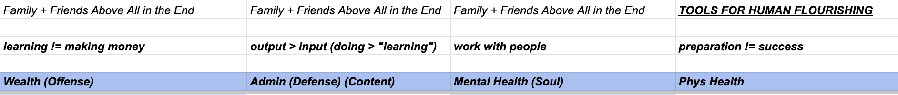

This is an essay about a productivity spreadsheet.
The long and short of the story is that for years I used to email myself a bunch of content and to-do items — semi-technical blog posts, reminders of the proverbial dentist appointment, videos of basketball footwork, and so forth. “Forget nothing important,” was the general attitude.
The good thing about this system is that, in the moment, it’s fast and nothing gets lost. Every reminder, every idea worth revisiting, was among my unread emails (the number of which typically hovered around 400).
The bad thing about this system, which I employed for years, was that it didn’t create any sense of prioritization (language is flat, so is email). “Do taxes” was a line item. So was the podcast re the latest from the Fed.
Given precious free time, how do you decide what to-do to do or which piece of content to consume?
Typically, I would scroll through my email, choose something that seemed interesting or necessary and do it the best I could. Sometimes that just meant reading most of blog post, watching a video, or setting up two-factor authentication.
So this email-yourself system kind of worked. I didn’t forget things and did my taxes. But I think the system falls short in terms of providing synthesis about how a single to-do email might relate to the others.
My “breakthrough,” which sounds stupidly obvious in retrospect, was to create major themes in your life — four are enough for me — and each email should fall into those themes (my feeling is that if your life’s efforts are more complicated than four themes, then it’s too complicated).
For me, the themes I chose were Offense/Wealth, Defense/Admin, Mental-Health/Soul, and Physical-Health. (Forgive me for prioritizing money, I would like to buy a house in the Bay Area).

So I’ve got these four themes in a spreadsheet now (at the top it says “friends and family above everything” as a reminder to not lose perspective about what matters most). And then I start moving the emails into the spreadsheet.
This goes pretty well. Sometimes there are subcategories. For example, in the Mental-Health/Soul section, there’s a section for trips for the handful of places friends have recommended I visit. In the Offense/Wealth section I have one for “Website,” which has helped me set this website up again, and contains changes I’d like to make to it as well as more essays I’d like to write.
Now when I have free time, I can consult the spreadsheet instead of my email. I can see all of my to-dos at once, giving me a more holistic picture of what I’m trying to do with life. I can then choose things to do and content to consume in the context of themes and sub-themes, rather than in isolation.
Also, when I add things to the spreadsheet — I still do email myself stuff because it’s so fast on-the-go — I can see how they fit into other items. There’s synthesis there. Life makes a bit more sense.
Maybe all this sounds obvious for the organized among us (emailing yourself may never have been the right system to begin with). And this spreadsheet system hasn’t necessarily an absolutely groundbreaking in terms of personal progress (investing 40-hour days would be much more helpful).
But I do think that the exercise of establishing what major fronts of your productive life you are focusing on, and then stacking the items into those fronts, has been a very solid step forward for me. I feel more relaxed with this spreadsheet and I thought I’d share it.
(I don’t think I find the time to prioritize writing this without moving onto that system.)
I still email myself, but a bit less frequently. And I can go through my email and push things into the spreadsheet, deleting those things that don’t matter.
email: owenfernau at gmail.com